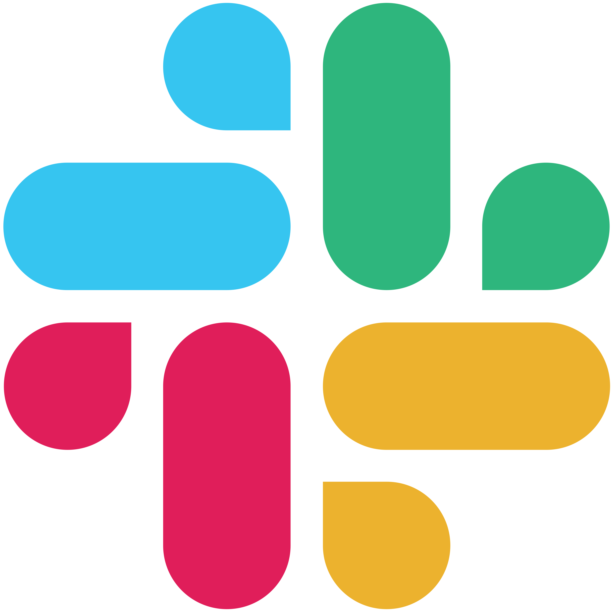
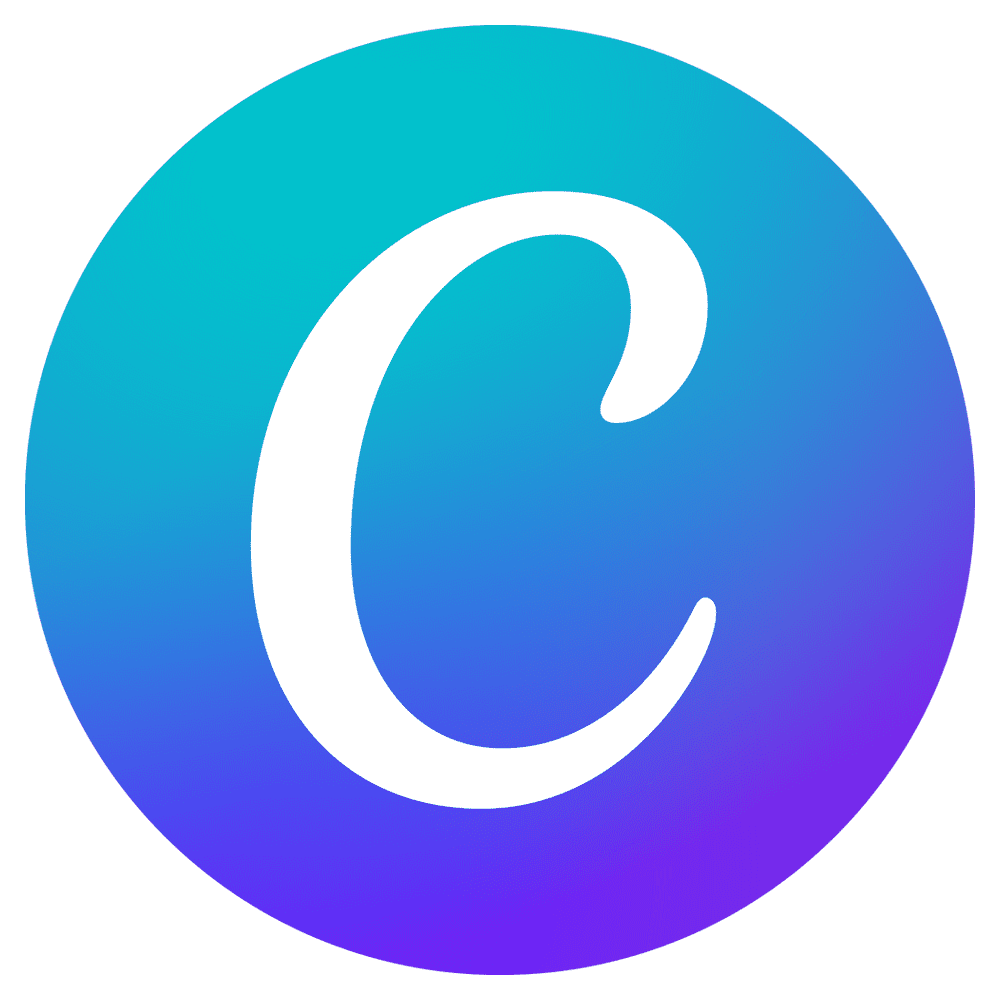
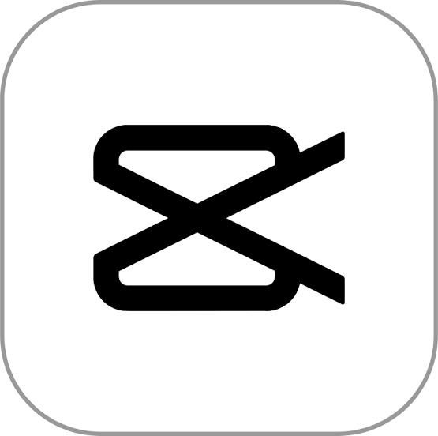
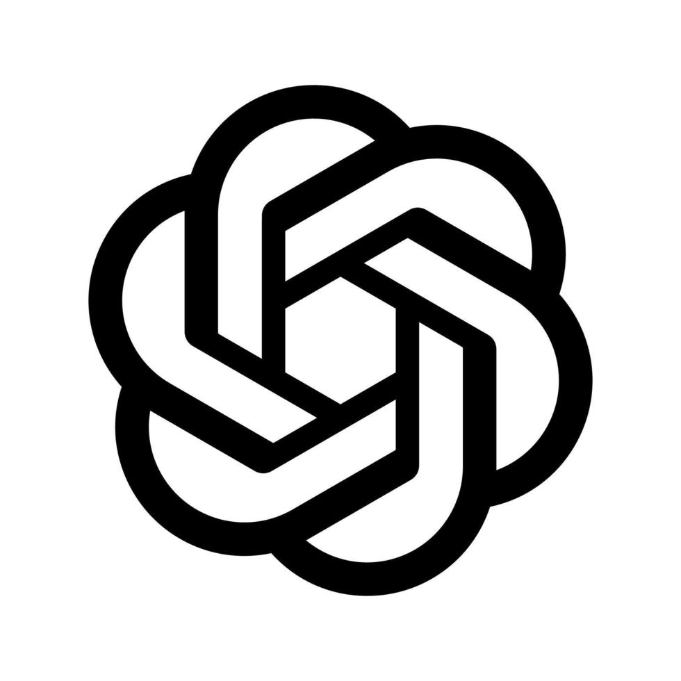

Administrative Support
Keep everyday tasks organized and moving forward.
I help businesses stay organized, responsive, and productive through administrative support, customer service, operations assistance, digital tools, and creative support.

I'm a flexible and motivated Virtual Assistant with experience in administrative support, customer service, operations, and digital tools.
My background includes supporting US-based teams, handling detail-oriented workflows, communicating with clients and partners, organizing information, and learning specialized systems quickly.
I'm now open to opportunities across different industries where I can bring strong organization, follow-through, communication, and problem-solving skills to a team.
A balanced set of services that can support businesses, founders, agencies, and remote teams across industries.
Keep everyday tasks organized and moving forward.
Provide clear, professional support and keep follow-ups from falling through the cracks.
Help teams maintain organized workflows and accurate information across business systems.
Assist with practical digital content and visual tasks for day-to-day business needs.
I'm comfortable working with business, communication, organization, AI, and creative platforms to keep work efficient and organized.
Insurance systems are part of my background, but they don't define the scope of my VA services.








I follow a clear process to keep tasks moving and deliver dependable work.
Understand the request, priority, and desired outcome.
Check information and identify what is needed.
Complete the work carefully using the right tools.
Review the result for accuracy and completeness.
Communicate the result and document next steps.
My previous roles gave me experience across operations, customer support, documentation, communication, and technical problem-solving.
Supported day-to-day business operations through workflow coordination, documentation, client and partner communication, system updates, renewals, research, and digital content support.
Handled high-volume customer inquiries, claims concerns, escalations, email correspondence, and team support while serving as an interim team lead for a two-week period.
Provided remote technical support for US-based customers, troubleshooting connectivity issues and maintaining detailed case documentation in a high-volume environment.
I bring transferable skills while staying open to new industries, tools, processes, and responsibilities.
I take ownership of assigned tasks and follow through.
I adapt to new systems and workflows with curiosity.
I keep teammates and clients informed throughout the work.
I value your time, processes, goals, and business.
I'm open to virtual assistant, administrative, customer support, operations, and digital support opportunities across industries.